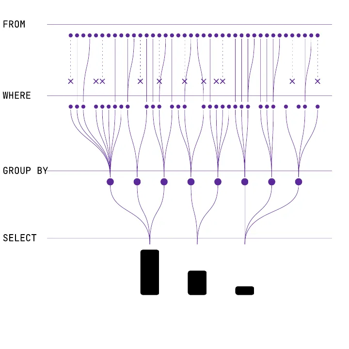
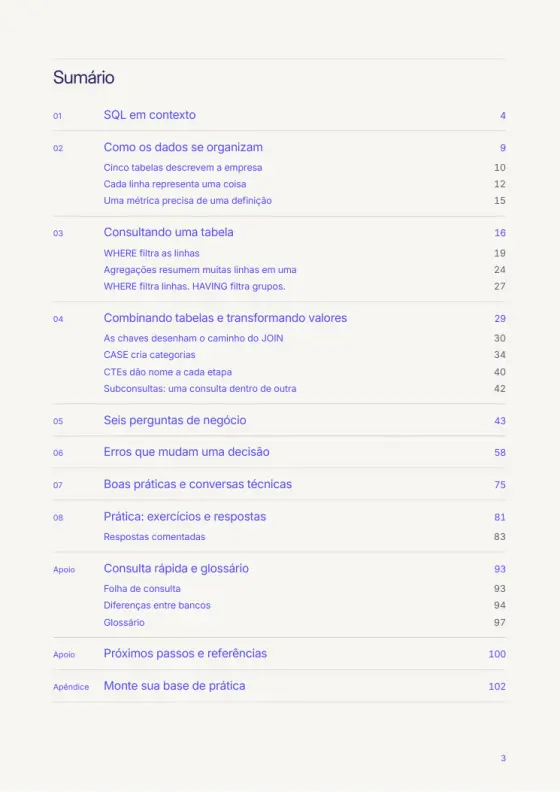
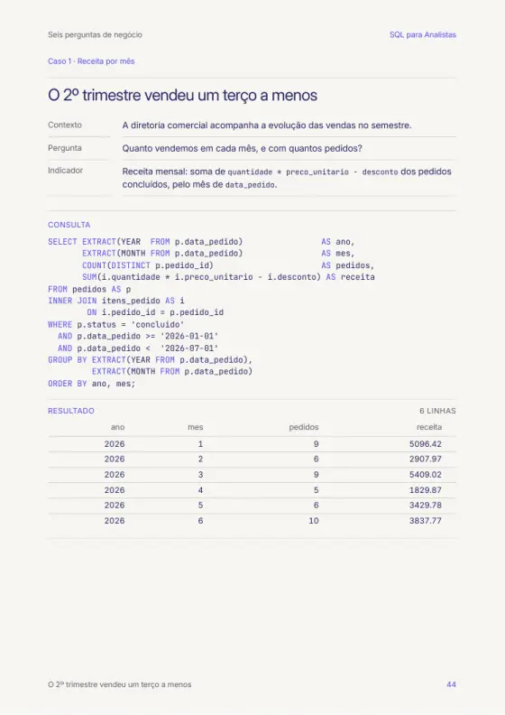
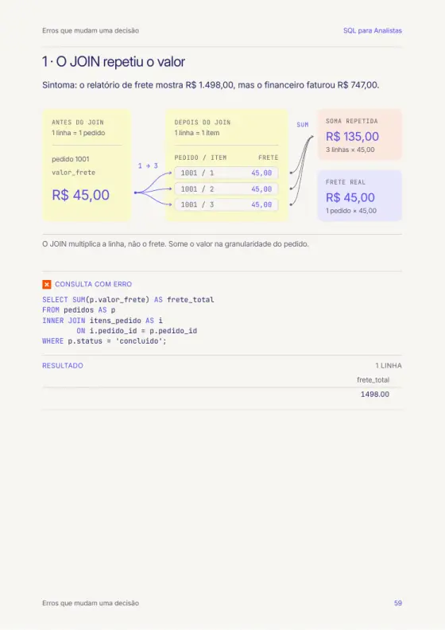
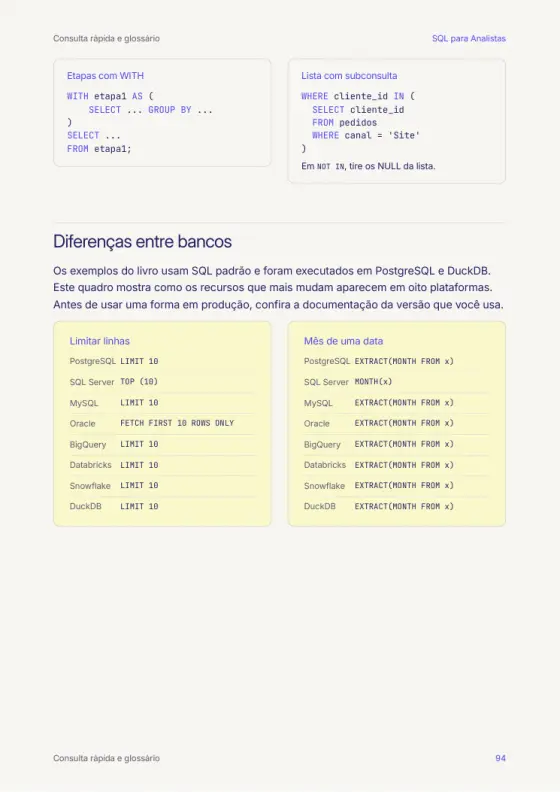
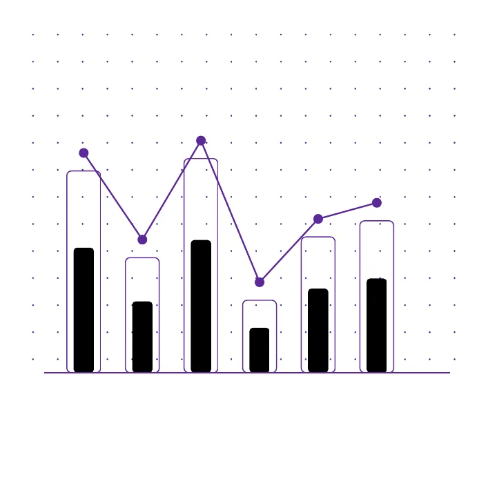
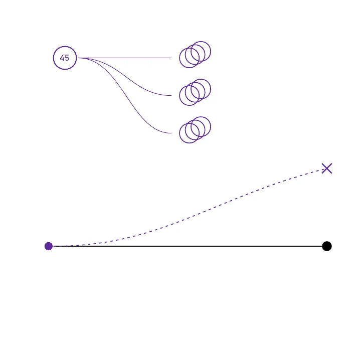
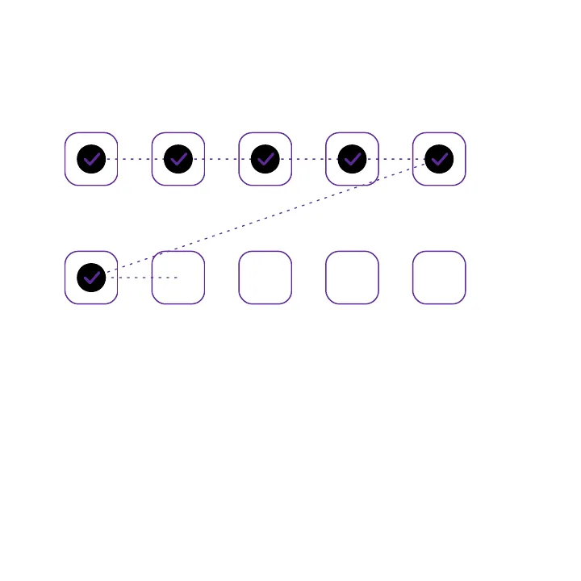

O que você vai conseguir fazer

- Explicar tabelas, chaves e granularidade: o que cada linha representa.
- Ler uma consulta e prever o resultado antes de executar.
- Escrever consultas com filtros, agrupamentos, JOINs, CTEs e subconsultas.
- Calcular receita mensal, ticket médio, mediana e participação por categoria.
- Reconhecer erros que distorcem indicadores e conferir um número antes de enviá-lo.
- Falar a língua das equipes de dados e adaptar a consulta ao banco da sua empresa.
- 8
- capítulos
- 6
- casos de negócio
- 9
- erros que mudam decisões
- 10
- exercícios resolvidos
- 8
- bancos comparados
- 111
- páginas
Basta saber usar planilhas: filtrar uma coluna, somar um intervalo, montar uma tabela dinâmica. Cada termo técnico é explicado no primeiro uso e aparece também no glossário.
O que tem dentro: 8 capítulos em 111 páginas
- 01SQL em contextoQue perguntas o SQL responde, SGBD, dialetos e a origem da linguagem.
- 02Como os dados se organizamTabelas, chaves, granularidade, NULL e as definições dos indicadores.
- 03Consultando uma tabelaSELECT, WHERE, ORDER BY, agregações, GROUP BY e HAVING.
- 04Combinando tabelas e transformando valoresJOINs, CASE, COALESCE, texto, datas, CTEs e subconsultas.
- 05Seis perguntas de negócioReceita por mês, produtos, ticket médio, clientes inativos, regiões e categorias.
- 06Erros que mudam uma decisãoNove armadilhas que devolvem um número plausível, e errado.
- 07Boas práticas e conversas técnicasConsultas leves, índices, EXPLAIN, exploração de bases e entrevistas.
- 08Prática: exercícios e respostasDez exercícios em dificuldade crescente, com respostas comentadas.
- +Apoio e ApêndiceFolha de consulta, diferenças entre 8 bancos, glossário e o script da base de prática.




PDF de 111 páginas · Acesso imediato após a confirmação do pagamento · Pagamento seguro pela Hotmart
Da pergunta ao número
Cada caso segue o mesmo roteiro: pergunta de negócio, consulta, resultado e uma leitura que separa o que os dados mostram do que ainda é hipótese.

- Contexto
- A diretoria comercial acompanha a evolução das vendas no semestre.
- Pergunta
- Quanto vendemos em cada mês, e com quantos pedidos?
- Indicador
- Soma de
quantidade * preco_unitario - descontodos pedidos concluídos, pelo mês dedata_pedido.
SELECT EXTRACT(YEAR FROM p.data_pedido) AS ano, EXTRACT(MONTH FROM p.data_pedido) AS mes, COUNT(DISTINCT p.pedido_id) AS pedidos, SUM(i.quantidade * i.preco_unitario - i.desconto) AS receita FROM pedidos AS p INNER JOIN itens_pedido AS i ON i.pedido_id = p.pedido_id WHERE p.status = 'concluido' AND p.data_pedido >= '2026-01-01' AND p.data_pedido < '2026-07-01' GROUP BY EXTRACT(YEAR FROM p.data_pedido), EXTRACT(MONTH FROM p.data_pedido) ORDER BY ano, mes;
Deslize o código para o lado →
| ano | mes | pedidos | receita |
|---|---|---|---|
| 2026 | 1 | 9 | 5096.42 |
| 2026 | 2 | 6 | 2907.97 |
| 2026 | 3 | 9 | 5409.02 |
| 2026 | 4 | 5 | 1829.87 |
| 2026 | 5 | 6 | 3429.78 |
| 2026 | 6 | 10 | 3837.77 |
O que os dados mostram
- Março teve a maior receita e abril, a menor.
- O 2º trimestre somou R$ 9.097,42, contra R$ 13.413,41 no 1º.
- Junho teve mais pedidos que janeiro, mas receita menor.
O que exige investigação
- É sazonal? Um semestre não permite comparar com o ano anterior.
- Junho tem dois pedidos pendentes que podem ser concluídos.
- Clientes que pararam de comprar explicam a queda?
Nove erros que devolvem um número plausível, e errado
Os erros perigosos não geram mensagem de erro. O livro mostra cada um com sintoma, consulta com erro, consulta corrigida e uma regra para não repetir. O primeiro:

SELECT SUM(p.valor_frete) AS frete_total FROM pedidos AS p INNER JOIN itens_pedido AS i ON i.pedido_id = p.pedido_id WHERE p.status = 'concluido';
| frete_total |
|---|
| 1498.00 |
SELECT SUM(valor_frete) AS frete_total FROM pedidos WHERE status = 'concluido';
| frete_total |
|---|
| 747.00 |
O frete pertence ao pedido. Depois do JOIN, um pedido de três itens vira três linhas, e o frete é somado três vezes. O relatório mostra R$ 1.498,00; o financeiro faturou R$ 747,00.
- 1O JOIN repetiu o valorSome cada valor no nível a que ele pertence.
- 2COUNT(*) não é COUNT(coluna)Diga o que está sendo contado: linhas, valores preenchidos ou itens distintos.
- 3Média de médias não é a médiaSome numeradores e denominadores e divida no fim.
- 4O percentual mudou de denominadorTodo percentual diz “de quê”.
- 5O último dia ficou de foraFiltre datas com início inclusivo e fim exclusivo.
- 6O WHERE desfez o LEFT JOINCondições sobre a tabela da direita vão no ON.
- 7Vender mais não é lucrar maisNomeie o indicador com precisão e diga o que ficou de fora.
- 8Andar junto não é causarUma consulta mostra o que aconteceu junto, e não por quê.
- 9NOT IN encontrou um NULLElimine os NULL da lista antes de usar NOT IN.
Pratique no navegador, sem instalar nada
O Apêndice traz o script completo da Distribuidora Sabiá, empresa fictícia com 15 clientes, 14 produtos, 51 pedidos e 104 itens. Os 10 exercícios usam essa base, e todas as respostas foram executadas.

No navegador
Abra o DuckDB Web Shell em shell.duckdb.org, cole o script e comece. Não é preciso instalar programas.
No seu computador
Instale o DuckDB e guarde a base num arquivo que fica entre uma sessão e outra.
No banco que você já usa
PostgreSQL ou um banco de estudo. O livro traz as adaptações para SQL Server e MySQL.
Para quem é, e para quem não é
É para você se
- trabalha com análise de negócio, finanças, vendas, marketing ou operações e vive de planilha exportada;
- quer aprender SQL do zero com perguntas de negócio, e não com exemplos abstratos;
- precisa conversar com a equipe de dados e conferir números antes de enviá-los.
Não é para você se
- já escreve SQL avançado no dia a dia;
- procura certificação, curso em vídeo ou administração de banco de dados;
- espera domínio avançado: este é um ponto de partida.
Perguntas frequentes
Preciso saber programar?
Não. O livro parte de quem usa planilhas e explica cada comando desde o início. Cada termo técnico aparece também no glossário.
O SQL do livro funciona no banco da minha empresa?
O livro ensina SQL padrão, executado em PostgreSQL e DuckDB. Um quadro mostra as diferenças entre PostgreSQL, SQL Server, MySQL, Oracle, BigQuery, Databricks, Snowflake e DuckDB.
Preciso instalar algum programa?
Não. Dá para praticar no navegador, no DuckDB Web Shell, com o script da base que vem no livro.
Como recebo o e-book?
Pela Hotmart, em PDF de 111 páginas, assim que o pagamento é confirmado. Você lê no computador, no tablet ou no celular.
Tem vídeo ou certificado?
Não. É um livro digital, introdutório, para ler no seu ritmo e consultar no dia a dia. Não oferece certificação nem garantia de resultado profissional.
Serve para entrevista de emprego?
Ajuda a revisar fundamentos e traz um roteiro de cinco passos para resolver problemas em voz alta, mas não é um preparatório e não garante aprovação.
Seus números, com a pergunta certa e a conta certa
Em 111 páginas, você aprende a escrever as consultas que respondem perguntas reais do negócio e a evitar os nove erros que mudam decisões sem ninguém perceber.
PDF de 111 páginas · Acesso imediato após a confirmação do pagamento · Pagamento seguro pela Hotmart